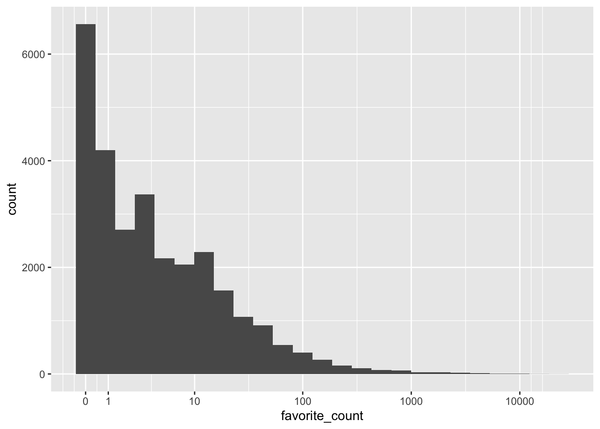
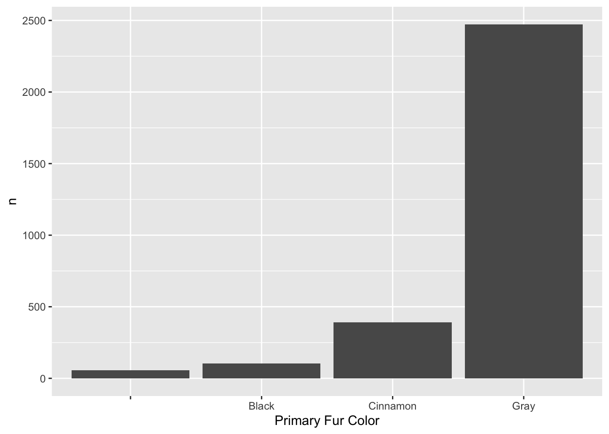
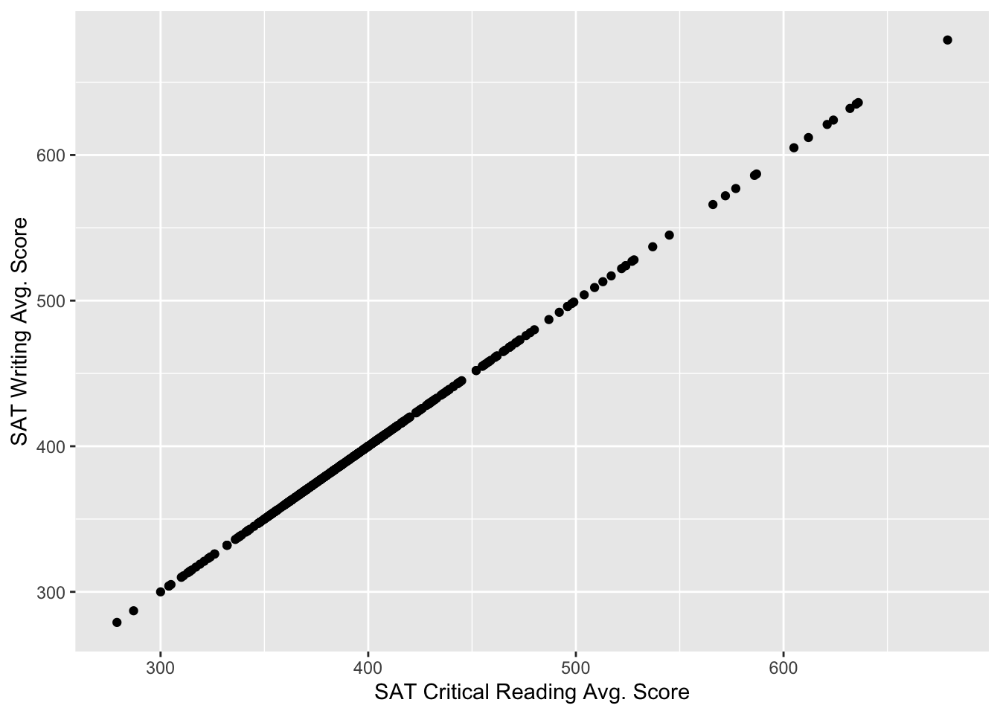
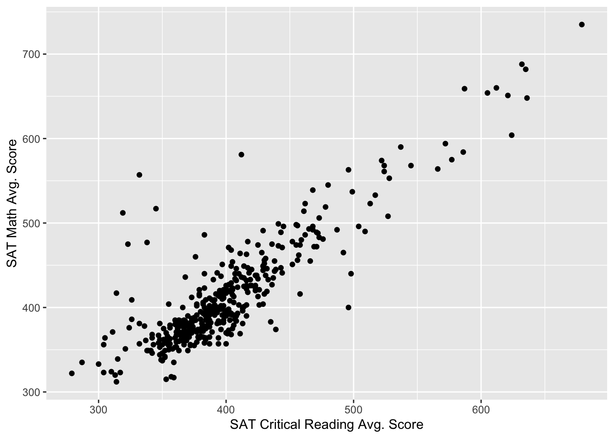

tweets <- readRDS("ncod_tweets.rds")5.1 set-up
Download the ncod_tweets.rds file from the link in the textbook. Put the file in the directory for your post. Then load it.
5.2 Summarise
This is a function from the dplyr package.
library(tidyverse) #loads dplyr as well── Attaching packages ─────────────────────────────────────── tidyverse 1.3.2 ──
✔ ggplot2 3.4.1 ✔ purrr 1.0.1
✔ tibble 3.1.8 ✔ dplyr 1.1.0
✔ tidyr 1.3.0 ✔ stringr 1.5.0
✔ readr 2.1.4 ✔ forcats 1.0.0
── Conflicts ────────────────────────────────────────── tidyverse_conflicts() ──
✖ dplyr::filter() masks stats::filter()
✖ dplyr::lag() masks stats::lag()favourite_summary <- summarise(tweets, # name of the data table
mean_favs = mean(favorite_count),
median_favs = median(favorite_count),
min_favs = min(favorite_count),
max_favs = max(favorite_count))
knitr::kable(favourite_summary) #print output| mean_favs | median_favs | min_favs | max_favs |
|---|---|---|---|
| 29.71732 | 3 | 0 | 22935 |
We can add as many new functions as we want. Each one will apply a function of choice to the named column.
For example, if wanted the standard deviation of the values in the column named favorite_count, then we added sd_favs = sd(favorite_count).
favourite_summary <- summarise(tweets,
mean_favs = mean(favorite_count),
median_favs = median(favorite_count),
min_favs = min(favorite_count),
max_favs = max(favorite_count),
sd_favs = sd(favorite_count),
mean_RTs = mean(retweet_count),
median_RTs = median(retweet_count),
min_RTs = min(retweet_count),
max_RTs = max(retweet_count),
sd_RTs = sd(favorite_count))
knitr::kable(favourite_summary)| mean_favs | median_favs | min_favs | max_favs | sd_favs | mean_RTs | median_RTs | min_RTs | max_RTs | sd_RTs |
|---|---|---|---|---|---|---|---|---|---|
| 29.71732 | 3 | 0 | 22935 | 329.9982 | 3.166632 | 0 | 0 | 2525 | 329.9982 |
Example of plotting a histogram of the favorite counts, in log scale.
ggplot(tweets, aes(x = favorite_count)) +
geom_histogram(bins = 25) +
scale_x_continuous(trans = "pseudo_log",
breaks = c(0, 1, 10, 100, 1000, 10000))
Another example of adding individual functions to summarise.
tweet_summary <- tweets %>%
summarise(mean_favs = mean(favorite_count),
median_favs = quantile(favorite_count, .5),
n = n(), # count all rows
min_date = min(created_at), # find the minimum date
max_date = max(created_at)) # find the maximum date
glimpse(tweet_summary)Rows: 1
Columns: 5
$ mean_favs <dbl> 29.71732
$ median_favs <dbl> 3
$ n <int> 28626
$ min_date <dttm> 2021-10-10 00:10:02
$ max_date <dttm> 2021-10-12 20:12:27Example of writing inline code.
date_from <- tweet_summary$min_date %>%
format("%d %B, %Y")
date_to <- tweet_summary$max_date %>%
format("%d %B, %Y")There were 28626 tweets between 10 October, 2021 and 12 October, 2021.
5.3.2 Pipes
Example of using the pipe operate syntax %>%.
tweets_per_user <- tweets %>%
count(screen_name, sort = TRUE)
head(tweets_per_user)# A tibble: 6 × 2
screen_name n
<chr> <int>
1 interest_outfit 35
2 LeoShir2 33
3 NRArchway 32
4 dr_stack 32
5 bhavna_95 25
6 WipeHomophobia 235.4 Counting
The count function counts the number of times each unique item occurs in a column. This is an example appplied to the screen_name column, which contains twitter usernames.
tweets_per_user <- tweets %>%
count(screen_name, sort = TRUE)
head(tweets_per_user)# A tibble: 6 × 2
screen_name n
<chr> <int>
1 interest_outfit 35
2 LeoShir2 33
3 NRArchway 32
4 dr_stack 32
5 bhavna_95 25
6 WipeHomophobia 235.5 Grouping
Two ways to use the group_by function. Here we produce summaries for each level in the verified column.
tweets_grouped <- tweets %>%
group_by(verified)
verified <- tweets_grouped %>%
summarise(count = n(),
mean_favs = mean(favorite_count),
mean_retweets = mean(retweet_count)) %>%
ungroup()
knitr::kable(verified)| verified | count | mean_favs | mean_retweets |
|---|---|---|---|
| FALSE | 26676 | 18.40576 | 1.825649 |
| TRUE | 1950 | 184.45949 | 21.511282 |
verified <- tweets %>%
group_by(verified) %>%
summarise(count = n(),
mean_favs = mean(favorite_count),
mean_retweets = mean(retweet_count)) %>%
ungroup()
knitr::kable(verified)| verified | count | mean_favs | mean_retweets |
|---|---|---|---|
| FALSE | 26676 | 18.40576 | 1.825649 |
| TRUE | 1950 | 184.45949 | 21.511282 |
Open data from NYC
Squirrel census
https://data.cityofnewyork.us/Environment/2018-Central-Park-Squirrel-Census-Squirrel-Data/vfnx-vebw
squirrel <- rio::import("2018_Central_Park_Squirrel_Census_-_Squirrel_Data.csv")
# counts of squirrels by the primary fur color
squirrel %>%
count(`Primary Fur Color`) %>%
ggplot(aes(x = `Primary Fur Color`, y = n)) +
geom_bar(stat = "identity")
SAT results
sat <- rio::import("2012_SAT_Results.csv")
sat <- sat %>%
mutate(`SAT Critical Reading Avg. Score` = as.numeric(`SAT Critical Reading Avg. Score`),
`SAT Math Avg. Score` = as.numeric(`SAT Math Avg. Score`),
`SAT Writing Avg. Score` = as.numeric(`SAT Critical Reading Avg. Score`)
) %>%
filter(!is.na(`SAT Critical Reading Avg. Score`),
!is.na(`SAT Math Avg. Score`),
!is.na(`SAT Writing Avg. Score`))Warning: There were 2 warnings in `mutate()`.
The first warning was:
ℹ In argument: `SAT Critical Reading Avg. Score = as.numeric(`SAT Critical
Reading Avg. Score`)`.
Caused by warning:
! NAs introduced by coercion
ℹ Run `dplyr::last_dplyr_warnings()` to see the 1 remaining warning.ggplot(sat, aes(x=`SAT Critical Reading Avg. Score`, y = `SAT Writing Avg. Score`)) +
geom_point()
ggplot(sat, aes(x=`SAT Critical Reading Avg. Score`, y = `SAT Math Avg. Score`)) +
geom_point()